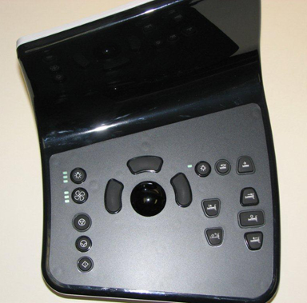
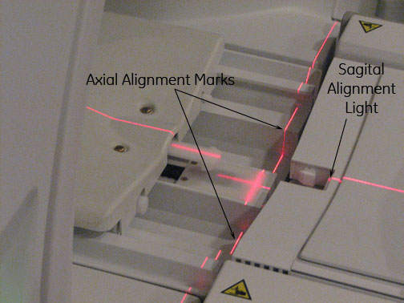
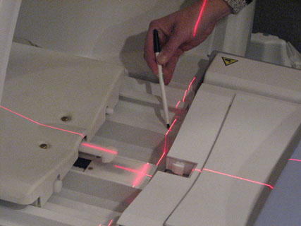

Operating Documentation
Direction 5670006, Rev# 1
Discovery MR750w GEM Service Methods
Module Version 4.0, Version Date 10/18/11
Operating Documentation |
| Required Persons | Preliminary Reqs | Procedure | Finalization |
|---|---|---|---|
| 1 | Not Applicable | 15 mins | Not Applicable |
The laser light(s), mounted on the front face of the magnet bore, are pre-adjusted at the factory and do not normally require realignment after the initial installation alignment procedures are completed.
Press the Alignment button on the magnet enclosure's control panel.
Illustration 1: Alignment Lights On Button on Version With In-Room Monitor

Check whether Axial Alignment light at the top is aligned with the marks on the Bridge as shown (see Illustration 2). If there are no marks in the cradle, verify the Axial Alignment light is plumb (pointing straight down). Disengage the cradle.
Illustration 2: Alignment Marks

Illustration 3: Alignment Marks and Beam

If the light is not aligned as shown in Illustration 2 (the axial line does not match up to the marks on the bridge or the plumb line), then the top (axial) Laser source at the magnet entry has to be adjusted. Refer to Laser Light Alignment to align.
Check whether the Sagital Alignment light is at the center of the cradle. See Illustration 2. If the light is not aligned, the sagital laser source at the magnet entry has to be adjusted. Refer to Laser Light Alignment to align.
If adjustments were made, perform z-iso center calibration by running the DQA II tool. See DQA II Tool and Troubleshooting.
Make two marks with a pen in the locations as shown in Illustration 3. These marks will be the reference for future Alignment Light Checks.